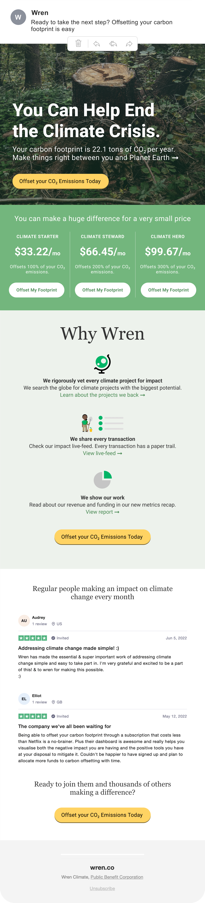
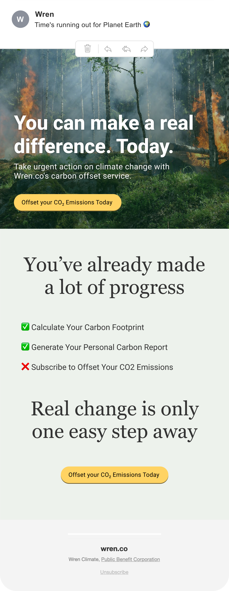
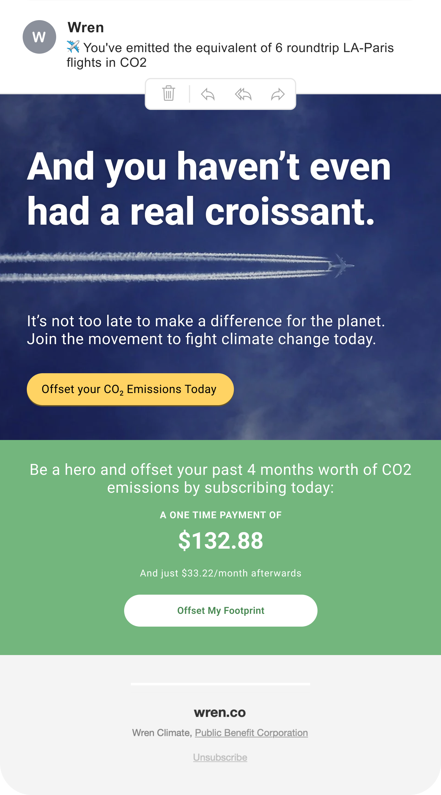

Tackling global warming, one email at a time.
Wren offers a free Carbon Footprint calculator, but converting calculcator visitors into eco-conscious subscribers via email markeing was proving challenging. Their emails were text-heavy, clunky-looking, and visually inconsistent.
We redesigned the entire flow to optimize for conversions by combating objections, leveraging urgency, and providing social proof. Here's a few of our emails:
Email 1
Email 2

Email 3
Email 4

Email 5
